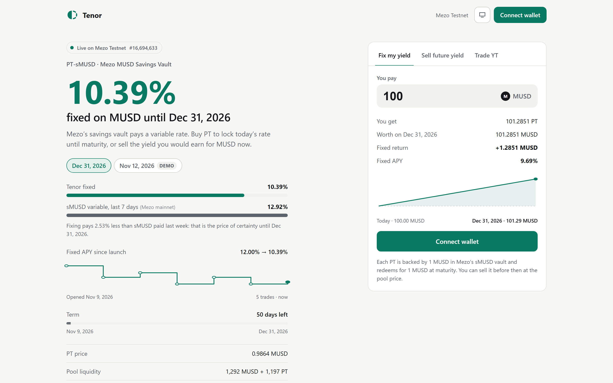

Lock the sMUSD savings rate until a set date, or sell your future yield for MUSD today.
The problem
sMUSD rate in April 2026, per Mezo’s own launch post.
What sMUSD actually paid over the last 7 days on Mezo mainnet, read from its yield index.
Mezo’s fixed MUSD borrow rate. Borrowers know their cost, but not what their MUSD will earn.
Savers can’t plan around a variable rate, and BTC borrowers can’t lock the spread between Mezo’s fixed loan and the savings vault.
The solution
Buy PT below 1 MUSD. The return is set the moment you buy.
Keep the PT, sell the YT, get the yield in MUSD today.
Take the variable sMUSD rate. No liquidation; at worst it earns nothing.
The product, live on Mezo Testnet

Built on Mezo
| MUSD | Deposit, quote and yield asset |
| sMUSD (MUSDSavingsRate) | Every PT is backed 1:1 by sMUSD; YT receives its MUSD yield. Handles sMUSD’s real behaviour from its verified source. |
| Mezo Pools, concentrated liquidity | PT/MUSD pool with liquidity placed where PT trades. The router only accepts pools from Mezo’s CL factory. |
| Mezo PCV fee distribution | Mezo’s protocol fees reach Tenor’s YT holders: 41.42 MUSD claimed on-chain. |
| Mezo mainnet sMUSD | The app shows sMUSD’s real 7-day rate next to Tenor’s fixed rate. |
Proof, on-chain today
Business model
5% of the sMUSD yield paid to YT, plus any yield after maturity, goes to the treasury. Enforced in the contract.
Borrow MUSD on Mezo at a fixed 1%, put it in PT, and the spread is fixed until maturity. More reason to mint MUSD.
LPs earn the PT pool’s swap fees on Mezo Pools. PT converges to 1 MUSD, so the range is narrow and predictable.
Status and next steps